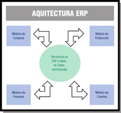

Tras la charla que mantuvo Ada con María para ponerla al corriente sobre la gestión empresarial, Ada decide que ya tiene la base suficiente para empezar a estudiar los sistemas de planificación de recursos empresariales o ERP. Así que le encarga que realice un informe sobre los tipos y características de los ERP-CRM, analizando sus ventajas, inconvenientes y requisitos para su implantación.
Ministerio de Educación y Formación Profesional (Elaboración propia)(Uso educativo no comercial)
Los sistemas de planificación de recursos empresariales (en inglés ERP, acrónimo de Enterprise Resource Planning) son sistemas de gestión de información que integran y automatizan muchas de las prácticas de negocio asociadas con los aspectos operativos o productivos de una empresa, eliminando complejas conexiones entre sistemas de distintos proveedores.
Este tipo de sistemas suele estar formado por una arquitectura modular, donde cada módulo gestiona las funciones de un área empresarial diferente, como pueden ser: nóminas, finanzas, gestión de proyectos, sistema de gestión geográfica, contabilidad, logística, stock, pedidos. Estas áreas de la empresa realizan funciones diferentes, pero se interrelacionan entre sí compartiendo información.
Gracias a la adaptabilidad de este tipo de sistemas, una empresa puede configurar su ERP para que se adapte a sus procesos de negocio. La personalización de este tipo de sistemas, junto con su modularidad y capacidad de integración de procesos, permite una gestión completa de las operaciones empresariales.